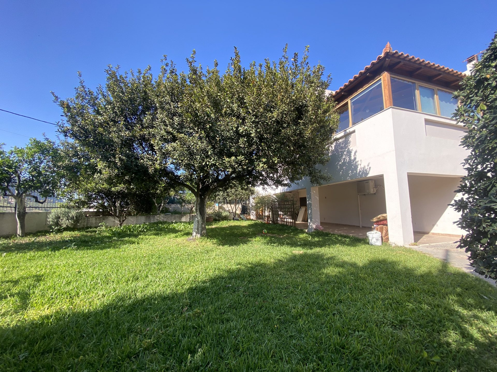
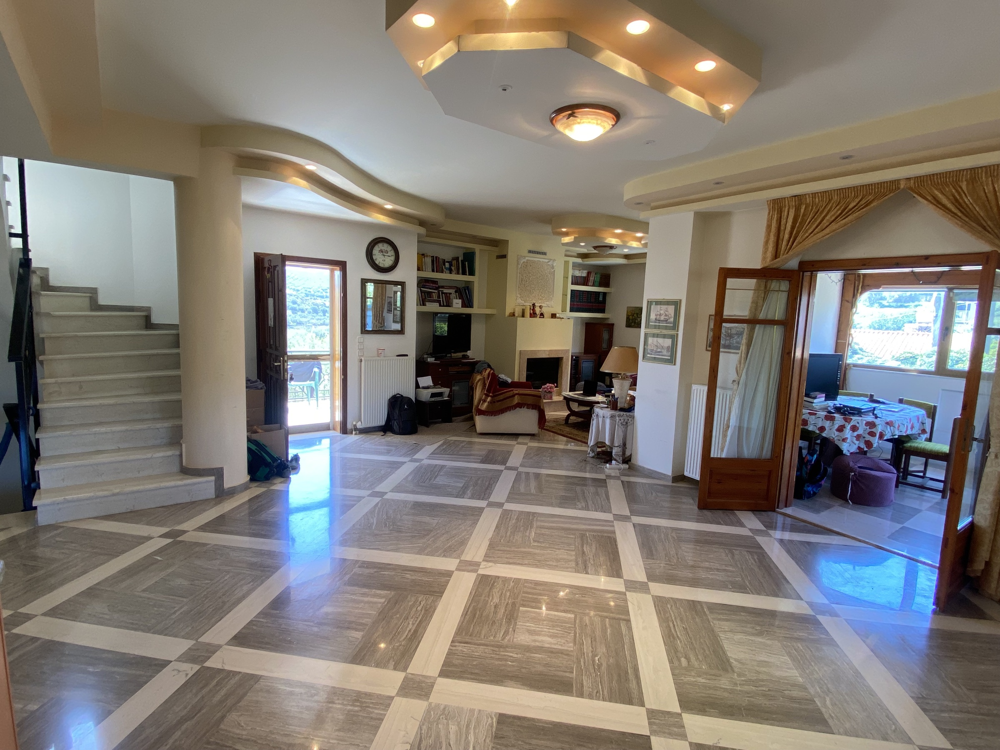
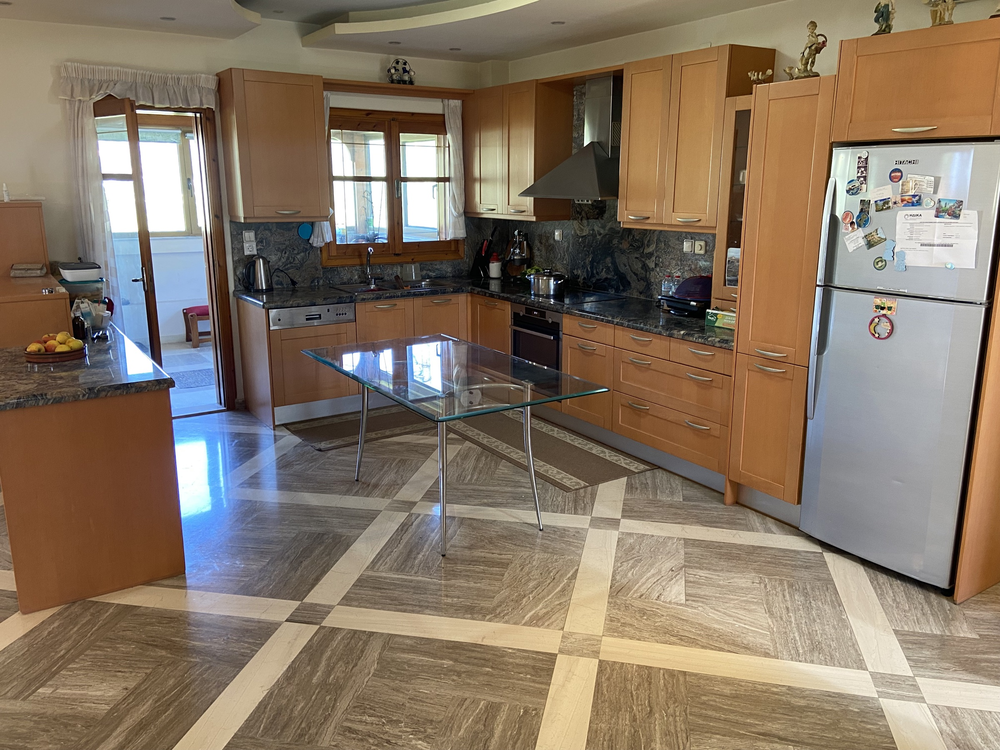
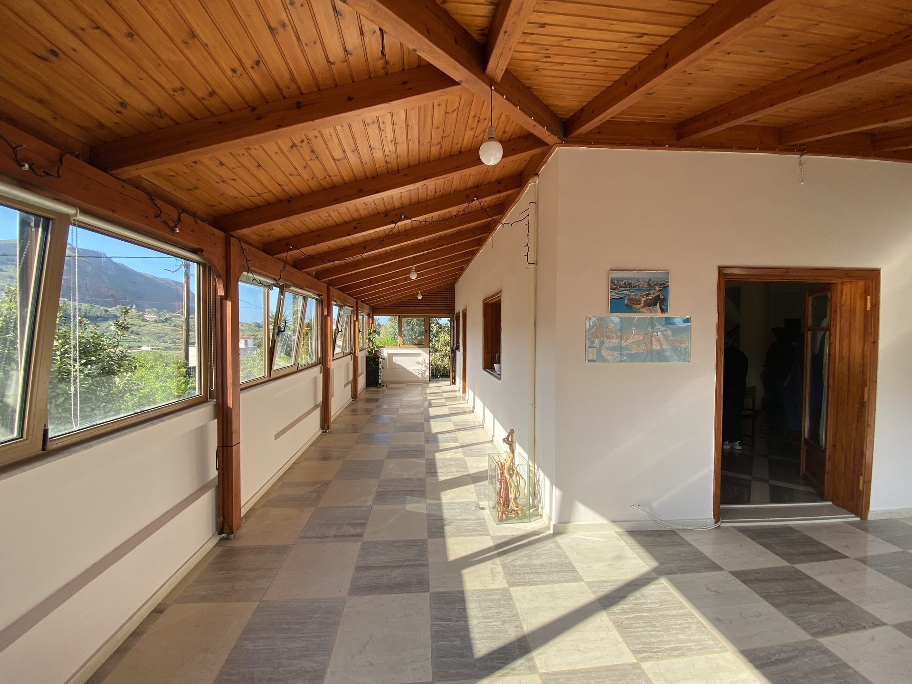
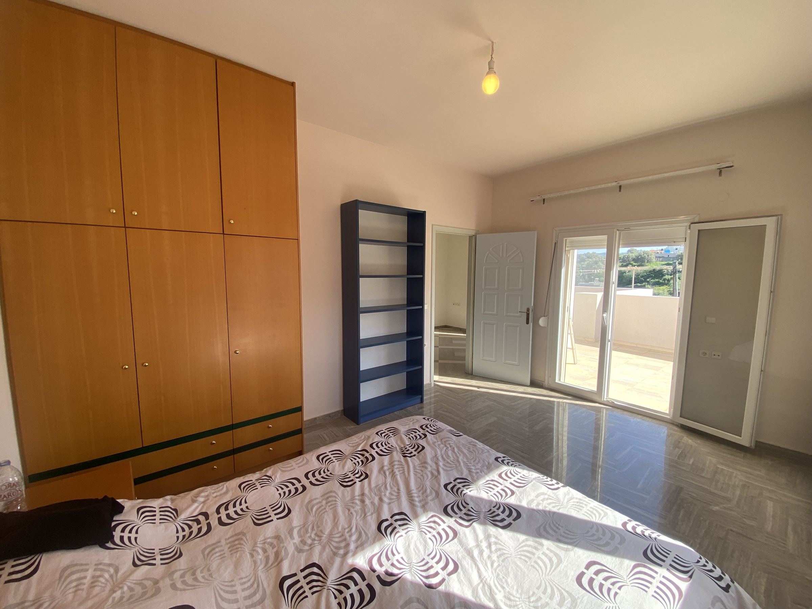
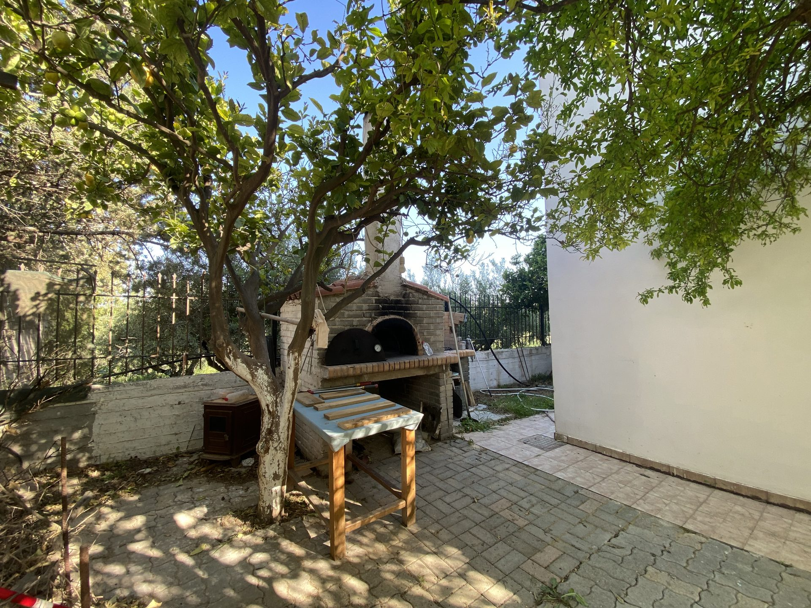
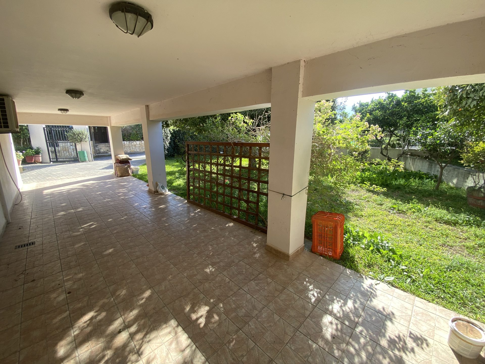
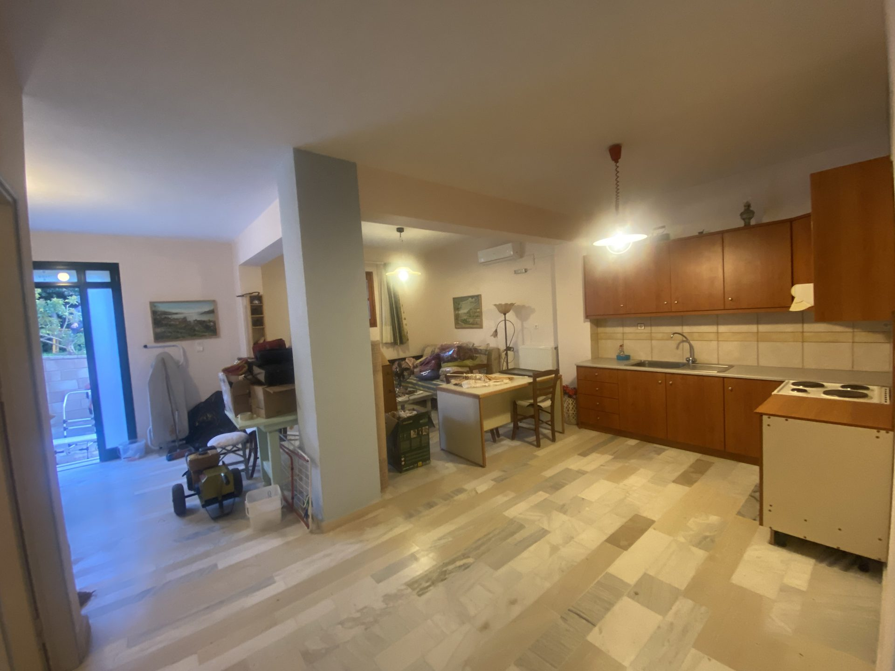

Μαρμάρινα δάπεδα και στους τρεις ορόφους, μια κλειστή βεράντα με ξύλινο ταβάνι και θέα στα βουνά, ένας ξυλόφουρνος κάτω από λεμονιά, και ένα διαμέρισμα κήπου με δικιά του είσοδο. Όλα σε ένα οικόπεδο 617 τετραγωνικών στον δυτικό άξονα του Ηρακλείου.
Η κατοικία ολοκληρώθηκε το 1998, με οικοδομική άδεια που εκδόθηκε το 1996 υπό τον αναθεωρημένο αντισεισμικό κανονισμό που ακολούθησε τη μεταρρύθμιση του 1985. Σκυρόδεμα και τουβλοδομή, μάρμαρο εσωτερικά, κουφώματα αλουμινίου — σχεδόν τρεις δεκαετίες αργότερα στέκεται χωρίς να έχει χρειαστεί καμία σημαντική επισκευή.
Το Καβροχώρι δεν είναι παραθαλάσσιο θέρετρο και δεν είναι προάστιο. Είναι ένα ζωντανό χωριό της επαρχίας Μαλεβιζίου, με σχολείο, νηπιαγωγείο, εκκλησία, καφενείο, κρεοπωλείο και σούπερ μάρκετ. Επτά λεπτά οδικώς δυτικά βρίσκεται το ΠΑΓΝΗ, δεκαπέντε το κέντρο της πόλης, είκοσι το αεροδρόμιο. Η Κνωσός είναι σε εικοσάλεπτη απόσταση. Τα βουνά του Μαλεβιζίου φαίνονται από τις βεράντες· τις θερινές νύχτες, τα γλέντια του Αρολίθου σου κάνουν συντροφιά.
Στις σελίδες που ακολουθούν περιγράφουμε όσα δεν φαίνονται από έναν χάρτη: τους χώρους, τον κήπο, τις υποδομές, τα έγγραφα. Είναι ένα σπίτι κατοικήσιμο σήμερα, με τα στοιχεία του σε τάξη, και έτοιμο για μεταβίβαση.

Η δομή του ακινήτου προσφέρει μια σπάνια ευελιξία. Στους δύο κύριους ορόφους εκτείνεται μια μεζονέτα 172 τετραγωνικών — σαλόνι, κουζίνα, τρία υπνοδωμάτια, μπάνιο και WC, με δύο μπαλκόνια στον επάνω όροφο. Στο επίπεδο του κήπου, με δική του είσοδο από την αυλή, ένα αυτόνομο διαμέρισμα 90 τετραγωνικών — σαλονοκουζίνα, δύο υπνοδωμάτια, πλήρες μπάνιο — με επιπλέον κελάρι κρασιού 23 τ.μ.
Η διάταξη επιτρέπει τρεις σεναριακές χρήσεις χωρίς οικοδομικές μεταβολές — οικογενειακή κατοικία με αυτόνομο ξενώνα, κύρια κατοικία με ανεξάρτητο γραφείο ή ιατρείο, ή κατοικία με συμπληρωματικό εισόδημα από βραχυχρόνια μίσθωση.
Ενιαίο σαλόνι και κουζίνα · τραπεζαρία με ενεργειακό τζάκι · ένα υπνοδωμάτιο · WC επισκεπτών · κλειστή βεράντα με τζαμαρίες και θέα στα βουνά. Δευτερεύουσα είσοδος από το μπαλκόνι της κουζίνας, πλάι στην κύρια.
Δύο υπνοδωμάτια με ντουλάπες από μασίφ ξύλο · μπάνιο · δύο μεγάλα μπαλκόνια προς το βουνό και τον κήπο.
Ξεχωριστή είσοδος · ενιαίος χώρος καθιστικού & κουζίνας · δύο υπνοδωμάτια · πλήρες μπάνιο. Ταβάνια 3 μέτρων, μαρμάρινα δάπεδα, φυσικό φως. Λειτούργησε τρία συνεχόμενα χρόνια ως βραχυχρόνια μίσθωση.




Ένα μεγάλο οικόπεδο μέσα στον οικισμό, χωρίς οπτική επαφή με γείτονες. Γρασίδι, ροδιές πλάι στις δύο εισόδους, πορτοκαλιές στο υπερυψωμένο κομμάτι του κήπου, και μια δάφνη στο κέντρο — μεγάλη όσο για να σηκώσει δεντρόσπιτο.
Στη μία γωνία, ένας λειτουργικός ξυλόφουρνος κάτω από τη λεμονιά, χτισμένος όπως οι παραδοσιακοί φούρνοι του χωριού — έτοιμος για ψωμί ή πίτσα. Δίπλα του, ένα τραπέζι κάτω από τα δέντρα για το καλοκαιρινό φαγητό. Στην άλλη πλευρά, στεγασμένο γκαράζ δύο θέσεων με άνετη είσοδο από τον δευτερεύοντα δρόμο.
Το οικόπεδο επιτρέπει — από πλευράς πολεοδομίας και χωροθέτησης — την κατασκευή πισίνας. Το έδαφος είναι επίπεδο και η περίφραξη από μπετόν με σιδερένια βαμμένα κάγκελα. Για ποτιστικές και οικιακές ανάγκες υπάρχει υπόγεια δεξαμενή 8 κ.μ., καθώς και δεξαμενή 1 κ.μ. στο δώμα.
— Δάφνη στο κέντρο, ροδιές πλάι στις εισόδους, πορτοκαλιές στο υπερυψωμένο κομμάτι, λεμονιά στον ξυλόφουρνο
— Λειτουργικός ξυλόφουρνος
— Τραπέζι κάτω από τα δέντρα
— Στεγασμένο γκαράζ 2 θέσεων
— Δυνατότητα κατασκευής πισίνας
— Υπόγεια δεξαμενή νερού 8 κ.μ. + 1 κ.μ. στο δώμα



Όλα τα μετρήσιμα στοιχεία της κατοικίας σε μία σελίδα.
Το Καβροχώρι είναι ένα από τα χωριά του Δήμου Μαλεβιζίου, με έδρα το γειτονικό Γάζι — το αναπτυσσόμενο δυτικό προάστιο του Ηρακλείου. Η περιοχή απλώνεται από τη βορινή ακτή του Κρητικού πελάγους, με το Φόδελε και την Αγία Πελαγία, μέχρι τα βουνά στα δυτικά του Ηρακλείου.
Ένα ζωντανό χωριό με σχολείο, νηπιαγωγείο, εκκλησία, καφενείο, κρεοπωλείο και σούπερ μάρκετ μέσα στον οικισμό. Στις ταβέρνες της περιοχής ξεχωρίζει ο Κούμος, με παραδοσιακή κρητική κουζίνα. Δύο μεγάλα σούπερ μάρκετ, φαρμακείο και ιατρικά κέντρα σε λιγότερο από πέντε χιλιόμετρα. Στάση αστικού & υπεραστικού λεωφορείου ακριβώς έξω από το σπίτι, με τακτικά δρομολόγια στο κέντρο Ηρακλείου και στο αεροδρόμιο.
Ο φάκελος εγγράφων είναι πλήρης και σε ισχύ, οργανωμένος για τον μηχανικό και τον νομικό σας σύμβουλο. Διαθέσιμος στο σύνολό του κατόπιν επικοινωνίας.
Εκδόθηκε το 1996 από την αρμόδια πολεοδομία. Υπό τον αναθεωρημένο αντισεισμικό κανονισμό '85.
Ολοκληρωμένη: τεχνική έκθεση, στατικός έλεγχος, κατόψεις (Κ1–Κ4), τομές (Τ1–Τ2), διάγραμμα κάλυψης (Δ1).
Ενημερωμένο, Οκτώβριος 2025.
Κλάση Γ, σε ισχύ έως Φεβρουάριος 2032.
Πλήρεις, καταχωρημένοι στο Υποθηκοφυλακείο Ηρακλείου. Συμβόλαιο αγοράς (1995), δηλωτικό παραχώρησης κοινόχρηστου χώρου (1996).
Σε εξέλιξη. ΚΑΕΚ διαθέσιμο κατόπιν αιτήματος.
Η συζήτηση γίνεται απευθείας με τους ιδιοκτήτες.
Επικοινωνήστε για περισσότερες πληροφορίες, κατόψεις, τεχνικά έγγραφα ή για να κλείσετε κατ' ιδίαν επίσκεψη.